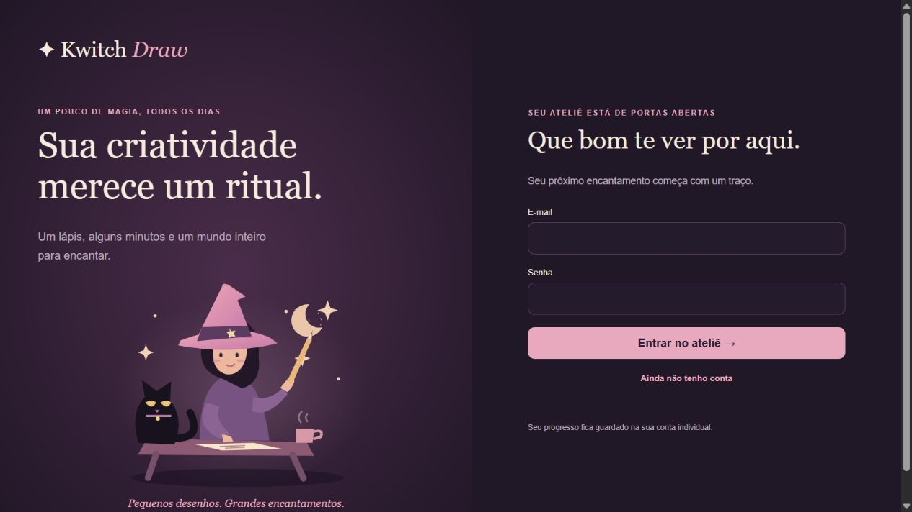

✦Kwitch DrawPequenos desenhos. Grandes encantamentos.
01DESENVOLVIMENTO WEBProjeto pessoal
Kwitch Draw
Um ateliê de desenho que conecta prática diária, aprendizado guiado e evolução pessoal. Interface interativa com quadro de desenho, autenticação e regras de progressão no banco.